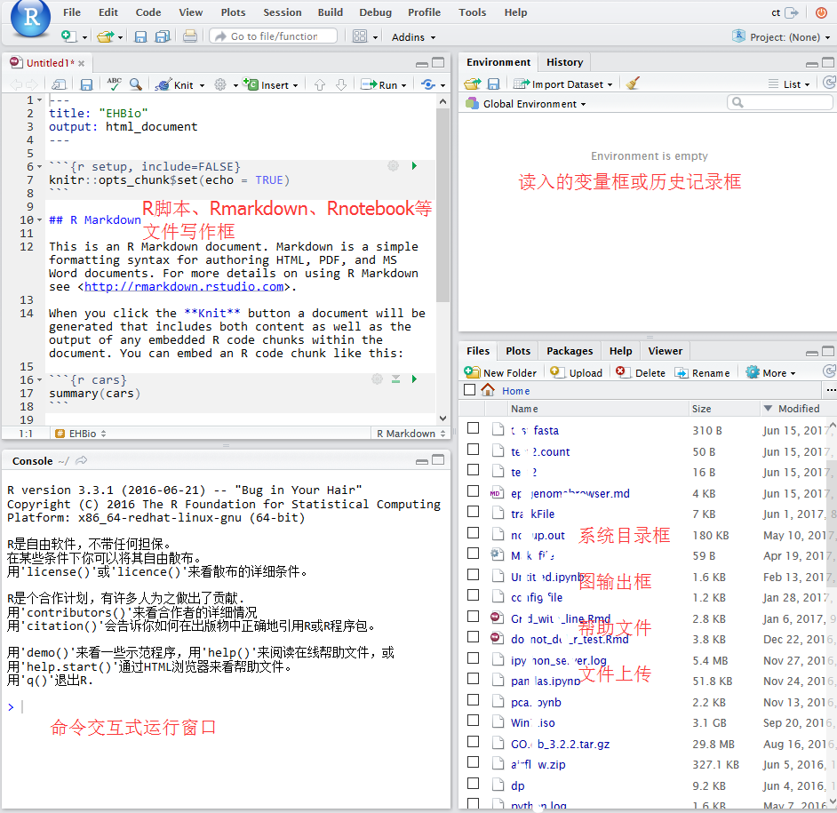

2 R基础
R语言是比较常用的统计分析和绘图语言，拥有强大的统计库、绘图库和生信分析的Bioconductor库，是学习生物信息分析的必备语言之一。
2.1 R安装
Linux下安装
如果使用的是新版的操作系统。直接可以用sudo apt-get install r-base 或者yum install r-base来安装。
若系统版本老，或没有根用户权限，则需要下载编译源码安装，最新地址为https://cran.r-project.org/src/base/R-latest.tar.gz。
具体编译方式为 (Linux下软件安装见 http://blog.genesino.com/2016/06/bash1):
# configure是收集系统信息，生成Makefile的过程
# --enable-R-shlib 需要设置，使得其他程序包括Rstudio可以使用R的动态库
# --prefix指定软件安装目录，需使用绝对路径
./configure --prefix=/home/ehbio/R/3.4.0 --enable-R-shlib
# 也可以使用这个命令，共享系统的blas库，提高运输速度
#./configure --prefix=/home/ehbio/R/3.4.0 --enable-R-shlib --with-blas --with-lapack
# make是编译的过程
make
# 安装到指定目录的过程
make install安装完成之后，在Linux终端输入R即可启动交互式运行界面，ctrl+d退出R运行界面。若提示找不到命令，需要判断有没有加入进环境变量。
Windows下安装
下载 https://cran.r-project.org/bin/windows/双击就可以了。
两者都需要考虑环境变量，若有问题，见文后的参考。
2.2 Rstudio基础
Rstudio是编辑、运行R语言的最为理想的工具之一，支持纯R脚本、Rmarkdown (脚本文档混排)、Bookdown (脚本文档混排成书)、Shiny (交互式网络应用)等。
2.2.1 Rstudio版本
Rsdutio分为桌面版和服务器版，桌面版可以在单机使用，服务器版可以从浏览器访问供多人使用。
服务器版安装好之后，访问地址为<服务器IP:8787> (8787为默认端口号)，用户名和密码为Linux用户的用户名和密码。
2.2.2 Rstudio安装
Linux下安装服务器版
安装参考 https://www.rstudio.com/products/rstudio/download-server/
wget https://download2.rstudio.org/rstudio-server-rhel-1.0.136-x86_64.rpm
sudo yum install --nogpgcheck rstudio-server-rhel-1.0.136-x86_64.rpm安装完之后的检测、启动和配置
sudo rstudio-server verify-installation #查看是否安装正确
sudo rstudio-server start ## 启动
sudo rstudio-server status ## 查看状态
sudo rstudio-server stop ## 停止
ifconfig | grep 'inet addr' ## 查看服务端ip地址
sudo rstudio-server start ## 修改配置文件后重启
sudo rstudio-server active-sessions ## 列出活跃的sessions:
sudo rstudio-server suspend-session <pid> ## 暂停session
sudo rstudio-server suspend-all ##暂停所有session- Rstudio日志目录，方便查看错误信息：/var/log/rstudio-server/
- 配置文件：
- /etc/rstudio/rserver.conf
www-port=8787 (default)
www-address=0.0.0.0 (default)
rsession-ld-library-path=/opt/local/lib:/opt/local/someapp/lib
rsession-which-r=/usr/local/bin/R- /etc/rstudio/rsession.conf
- Timeout
[user]
session-timeout-minutes=30
[@powerusers]
session-timeout-minutes=0Windows下安装桌面版
下载之后 (https://www.rstudio.com/products/rstudio/download2/)双击安装，需要使用管理员权限，其它无需要注意的。
2.2.3 Rstudio 使用
Windows下桌面版直接双击打开即可使用，Linux服务器版访问地址为<服务器IP:8787>，用户名和密码为Linux用户的用户名和密码。
2.2.3.1 Rstudio 界面

2.2.3.2 Rstudio中新建或打开文件
如果是桌面版，直接就可以访问“我的电脑”去打开之前写过的脚本。如果是服务器版，可直接访问服务器上写过的脚本。Rstudio右下1/4部分可以切换目录，点击more，设置工作目录。可以上传本地的脚本到对应目录打开。

2.3 R基本语法
2.3.1 获取帮助文档，查看命令或函数的使用方法、事例或适用范围
>>> ?command
>>> ??command #深度搜索或模糊搜索此命令
>>> example(command) #得到命令的例子
>>> example(plot)2.3.2 R中的变量及其初始化
# 数字变量
a <- 10
a## [1] 10# 字符串变量
a <- "abc"
a## [1] "abc"# 逻辑变量
a <- TRUE
a## [1] TRUEb <- T
b## [1] TRUEd <- FALSE
d## [1] FALSE# 向量
a <- vector(mode="logical", length=5)
a## [1] FALSE FALSE FALSE FALSE FALSEa <- c(1,2,3,4)
# 判断一个变量是不是vector
is.vector(a)## [1] TRUEa <- list(element1=c(1,2,3,4), element2=1:5)
a## $element1
## [1] 1 2 3 4
##
## $element2
## [1] 1 2 3 4 5# 矩阵
a <- matrix(1:20,nrow=5,ncol=4,byrow=T)
a## [,1] [,2] [,3] [,4]
## [1,] 1 2 3 4
## [2,] 5 6 7 8
## [3,] 9 10 11 12
## [4,] 13 14 15 16
## [5,] 17 18 19 20is.matrix(a)## [1] TRUEdim(a) #查看或设置数组的维度向量## [1] 5 4# 错误的用法
# dim(a) <- c(4,4)# 正确的用法
a <- 1:20
dim(a) <- c(5,4) #转换向量为矩阵
a## [,1] [,2] [,3] [,4]
## [1,] 1 6 11 16
## [2,] 2 7 12 17
## [3,] 3 8 13 18
## [4,] 4 9 14 19
## [5,] 5 10 15 20print(paste("矩阵a的行数", nrow(a)))## [1] "矩阵a的行数 5"print(paste("矩阵a的列数", ncol(a)))## [1] "矩阵a的列数 4"#查看或设置行列名
rownames(a)## NULLrownames(a) <- c('a','b','c','d','e')
a## [,1] [,2] [,3] [,4]
## a 1 6 11 16
## b 2 7 12 17
## c 3 8 13 18
## d 4 9 14 19
## e 5 10 15 20# R中获取一系列的字母
letters[1:4]## [1] "a" "b" "c" "d"colnames(a) <- letters[1:4]
a## a b c d
## a 1 6 11 16
## b 2 7 12 17
## c 3 8 13 18
## d 4 9 14 19
## e 5 10 15 202.3.3 变量类型和转换
不同的变量类型有不同的操作方式，is系列和as系列函数用来判断变量的属性和转换变量的属性
is.character(a)## [1] FALSEis.numeric(a)## [1] TRUEis.matrix(a)## [1] TRUEis.data.frame(a)## [1] FALSEis.data.frame(as.data.frame(a))## [1] TRUE2.3.4 R中矩阵运算
# 获得随机的正态分布数据
# random generation for the normal distribution with mean equal to ‘mean’
# and standard deviation equal to ‘sd’.
rnorm(10, mean = 0, sd = 1) # 正态分布的随机数## [1] -1.7623698 0.1703914 -1.0272638 -1.2723234 -0.9341441 2.2230742
## [7] -0.3978386 1.6669337 -1.0560411 -2.8457878# 获得随机的均匀分布的数据
# random generation for the uniform distribution with mean equal to ‘mean’
# and standard deviation equal to ‘sd’.
runif(10, min = 0, max = 1) # 平均分布的随机数## [1] 0.1204988 0.2521150 0.9239175 0.7009465 0.8067070 0.4582831 0.9140327
## [8] 0.4635908 0.6317504 0.3384500rep(1,5) # 把1重复5次## [1] 1 1 1 1 1scale(1:5) # 标准化数据## [,1]
## [1,] -1.2649111
## [2,] -0.6324555
## [3,] 0.0000000
## [4,] 0.6324555
## [5,] 1.2649111
## attr(,"scaled:center")
## [1] 3
## attr(,"scaled:scale")
## [1] 1.581139scale默认操作对等于
# 标准化数据
a <- 1:5
(a - mean(a)) / sd(a)## [1] -1.2649111 -0.6324555 0.0000000 0.6324555 1.2649111a <- c(rnorm(5), rnorm(5,1), runif(5), runif(5,-1,1), 1:5, rep(0,5), c(2,10,11,13,4),
scale(1:5)[1:5])
a## [1] 0.571515883 -0.786827497 -0.069386297 -0.366760489 -2.336466642
## [6] -0.256031715 0.976938913 2.239830880 1.307826807 1.689656291
## [11] 0.005828207 0.908370379 0.220653976 0.415340775 0.237234787
## [16] -0.996525097 0.179710705 -0.499995762 -0.680745059 -0.838659695
## [21] 1.000000000 2.000000000 3.000000000 4.000000000 5.000000000
## [26] 0.000000000 0.000000000 0.000000000 0.000000000 0.000000000
## [31] 2.000000000 10.000000000 11.000000000 13.000000000 4.000000000
## [36] -1.264911064 -0.632455532 0.000000000 0.632455532 1.264911064# ncol=5 5列
# byrow=T: 先填充行
a <- matrix(a, ncol=5, byrow=T)
a## [,1] [,2] [,3] [,4] [,5]
## [1,] 0.571515883 -0.7868275 -0.0693863 -0.3667605 -2.3364666
## [2,] -0.256031715 0.9769389 2.2398309 1.3078268 1.6896563
## [3,] 0.005828207 0.9083704 0.2206540 0.4153408 0.2372348
## [4,] -0.996525097 0.1797107 -0.4999958 -0.6807451 -0.8386597
## [5,] 1.000000000 2.0000000 3.0000000 4.0000000 5.0000000
## [6,] 0.000000000 0.0000000 0.0000000 0.0000000 0.0000000
## [7,] 2.000000000 10.0000000 11.0000000 13.0000000 4.0000000
## [8,] -1.264911064 -0.6324555 0.0000000 0.6324555 1.2649111# 按行加和
rowSums(a)## [1] -2.987925 5.958221 1.787428 -2.836215 15.000000 0.000000 40.000000
## [8] 0.000000# 注意检查括号的配对
#a <- a[rowSums(abs(a)!=0,]
#错误: 意外的']' in "a <- a[rowSums(abs(a)!=0,]"
# 去除全部为0的行
a <- a[rowSums(abs(a))!=0,]
# 另外一种方式去除全部为0的行
#a[rowSums(a==0)<ncol(a),]
a## [,1] [,2] [,3] [,4] [,5]
## [1,] 0.571515883 -0.7868275 -0.0693863 -0.3667605 -2.3364666
## [2,] -0.256031715 0.9769389 2.2398309 1.3078268 1.6896563
## [3,] 0.005828207 0.9083704 0.2206540 0.4153408 0.2372348
## [4,] -0.996525097 0.1797107 -0.4999958 -0.6807451 -0.8386597
## [5,] 1.000000000 2.0000000 3.0000000 4.0000000 5.0000000
## [6,] 2.000000000 10.0000000 11.0000000 13.0000000 4.0000000
## [7,] -1.264911064 -0.6324555 0.0000000 0.6324555 1.2649111矩阵运算，R默认针对整个数据进行常见运算
#所有值都乘以2
a * 2## [,1] [,2] [,3] [,4] [,5]
## [1,] 1.14303177 -1.5736550 -0.1387726 -0.7335210 -4.6729333
## [2,] -0.51206343 1.9538778 4.4796618 2.6156536 3.3793126
## [3,] 0.01165641 1.8167408 0.4413080 0.8306815 0.4744696
## [4,] -1.99305019 0.3594214 -0.9999915 -1.3614901 -1.6773194
## [5,] 2.00000000 4.0000000 6.0000000 8.0000000 10.0000000
## [6,] 4.00000000 20.0000000 22.0000000 26.0000000 8.0000000
## [7,] -2.52982213 -1.2649111 0.0000000 1.2649111 2.5298221# 所有值取绝对值，再取对数 （取对数前一般加一个数避免对0或负值取对数）
log2(abs(a)+1)## [,1] [,2] [,3] [,4] [,5]
## [1,] 0.652156854 0.8374004 0.0967831 0.4507604 1.7383211
## [2,] 0.328872893 0.9832683 1.6959185 1.2065350 1.4274218
## [3,] 0.008383917 0.9323412 0.2876543 0.5011495 0.3071193
## [4,] 0.997491207 0.2384331 0.5849584 0.7491009 0.8786545
## [5,] 1.000000000 1.5849625 2.0000000 2.3219281 2.5849625
## [6,] 1.584962501 3.4594316 3.5849625 3.8073549 2.3219281
## [7,] 1.179454401 0.7070437 0.0000000 0.7070437 1.1794544# 取出最大值、最小值、行数、列数
max(a)## [1] 13min(a)## [1] -2.336467nrow(a)## [1] 7ncol(a)## [1] 5#增加一列或一行
#cbind: column bind
cbind(a, 1:7)## [,1] [,2] [,3] [,4] [,5] [,6]
## [1,] 0.571515883 -0.7868275 -0.0693863 -0.3667605 -2.3364666 1
## [2,] -0.256031715 0.9769389 2.2398309 1.3078268 1.6896563 2
## [3,] 0.005828207 0.9083704 0.2206540 0.4153408 0.2372348 3
## [4,] -0.996525097 0.1797107 -0.4999958 -0.6807451 -0.8386597 4
## [5,] 1.000000000 2.0000000 3.0000000 4.0000000 5.0000000 5
## [6,] 2.000000000 10.0000000 11.0000000 13.0000000 4.0000000 6
## [7,] -1.264911064 -0.6324555 0.0000000 0.6324555 1.2649111 7# rbind: row bind
rbind(a,1:5)## [,1] [,2] [,3] [,4] [,5]
## [1,] 0.571515883 -0.7868275 -0.0693863 -0.3667605 -2.3364666
## [2,] -0.256031715 0.9769389 2.2398309 1.3078268 1.6896563
## [3,] 0.005828207 0.9083704 0.2206540 0.4153408 0.2372348
## [4,] -0.996525097 0.1797107 -0.4999958 -0.6807451 -0.8386597
## [5,] 1.000000000 2.0000000 3.0000000 4.0000000 5.0000000
## [6,] 2.000000000 10.0000000 11.0000000 13.0000000 4.0000000
## [7,] -1.264911064 -0.6324555 0.0000000 0.6324555 1.2649111
## [8,] 1.000000000 2.0000000 3.0000000 4.0000000 5.0000000# 计算每一行的var (方差)
# apply表示对数据（第一个参数）的每一行 (第二个参数赋值为1) 或每一列 (2)操作
# 最后返回一个列表
apply(a,1,var)## [1] 1.1896482 0.8755184 0.1159168 0.2083237 2.5000000 22.5000000
## [7] 1.0000000# 计算每一行的mad (中值绝对偏差)
# 一般认为比方差的鲁棒性更强，更少受异常值的影响，更能反映数据间的差异)
# 函数中的第二个参数 1 表示安行操作
apply(a,1,mad)## [1] 0.6227913 0.5661004 0.2640599 0.2679789 1.4826000 4.4478000 0.9376786# 计算每一列的平均值
apply(a,2,mean)## [1] 0.1514109 1.8065339 2.2701575 2.6154454 1.2880965# 取出中值绝对偏差大于0.5的行
b = a[apply(a,1,mad)>0.5,]
b## [,1] [,2] [,3] [,4] [,5]
## [1,] 0.5715159 -0.7868275 -0.0693863 -0.3667605 -2.336467
## [2,] -0.2560317 0.9769389 2.2398309 1.3078268 1.689656
## [3,] 1.0000000 2.0000000 3.0000000 4.0000000 5.000000
## [4,] 2.0000000 10.0000000 11.0000000 13.0000000 4.000000
## [5,] -1.2649111 -0.6324555 0.0000000 0.6324555 1.264911# 输出 1 4 2 3 5
# 解释：原列表第一个元素显示在第一位
# 原列表第四个元素显示在第二位
# 原列表第二个元素显示在第三位
order(c(1,3,4,2,5))## [1] 1 4 2 3 5# 产生新的顺序
#
order(apply(b,1,mad), decreasing=T)## [1] 4 3 5 1 2# 矩阵按照mad的大小降序排列
c = b[order(apply(b,1,mad), decreasing=T),]
c## [,1] [,2] [,3] [,4] [,5]
## [1,] 2.0000000 10.0000000 11.0000000 13.0000000 4.000000
## [2,] 1.0000000 2.0000000 3.0000000 4.0000000 5.000000
## [3,] -1.2649111 -0.6324555 0.0000000 0.6324555 1.264911
## [4,] 0.5715159 -0.7868275 -0.0693863 -0.3667605 -2.336467
## [5,] -0.2560317 0.9769389 2.2398309 1.3078268 1.689656rownames(c) <- paste('Gene', letters[1:nrow(c)], sep="_")
colnames(c) <- toupper(letters[1:ncol(c)])
c## A B C D E
## Gene_a 2.0000000 10.0000000 11.0000000 13.0000000 4.000000
## Gene_b 1.0000000 2.0000000 3.0000000 4.0000000 5.000000
## Gene_c -1.2649111 -0.6324555 0.0000000 0.6324555 1.264911
## Gene_d 0.5715159 -0.7868275 -0.0693863 -0.3667605 -2.336467
## Gene_e -0.2560317 0.9769389 2.2398309 1.3078268 1.689656# 矩阵转置
expr = t(c)
expr## Gene_a Gene_b Gene_c Gene_d Gene_e
## A 2 1 -1.2649111 0.5715159 -0.2560317
## B 10 2 -0.6324555 -0.7868275 0.9769389
## C 11 3 0.0000000 -0.0693863 2.2398309
## D 13 4 0.6324555 -0.3667605 1.3078268
## E 4 5 1.2649111 -2.3364666 1.6896563# 矩阵值的替换
expr2 = expr
expr2[expr2<0] = 0
expr2## Gene_a Gene_b Gene_c Gene_d Gene_e
## A 2 1 0.0000000 0.5715159 0.0000000
## B 10 2 0.0000000 0.0000000 0.9769389
## C 11 3 0.0000000 0.0000000 2.2398309
## D 13 4 0.6324555 0.0000000 1.3078268
## E 4 5 1.2649111 0.0000000 1.6896563# 矩阵中只针对某一列替换
# expr2是个矩阵不是数据框，不能使用列名字索引
# expr2[expr2$Gene_b<1, "Gene_b"] <- 1# str是一个最为常用、好用的查看变量信息的工具，尤其是对特别复杂的变量，
# 可以看清其层级结构，便于提取数据
str(expr2)## num [1:5, 1:5] 2 10 11 13 4 1 2 3 4 5 ...
## - attr(*, "dimnames")=List of 2
## ..$ : chr [1:5] "A" "B" "C" "D" ...
## ..$ : chr [1:5] "Gene_a" "Gene_b" "Gene_c" "Gene_d" ...# 转换为数据框，再进行相应的操作
expr2 <- as.data.frame(expr2)
str(expr2)## 'data.frame': 5 obs. of 5 variables:
## $ Gene_a: num 2 10 11 13 4
## $ Gene_b: num 1 2 3 4 5
## $ Gene_c: num 0 0 0 0.632 1.265
## $ Gene_d: num 0.572 0 0 0 0
## $ Gene_e: num 0 0.977 2.24 1.308 1.69expr2[expr2$Gene_b<1, "Gene_b"] <- 1
expr2## Gene_a Gene_b Gene_c Gene_d Gene_e
## A 2 1 0.0000000 0.5715159 0.0000000
## B 10 2 0.0000000 0.0000000 0.9769389
## C 11 3 0.0000000 0.0000000 2.2398309
## D 13 4 0.6324555 0.0000000 1.3078268
## E 4 5 1.2649111 0.0000000 1.68965632.3.5 R中矩阵筛选合并
# 读入样品信息
sampleInfo = "Samp;Group;Genotype
A;Control;WT
B;Control;WT
D;Treatment;Mutant
C;Treatment;Mutant
E;Treatment;WT
F;Treatment;WT"
phenoData = read.table(text=sampleInfo,sep=";", header=T, row.names=1, quote="")
phenoData## Group Genotype
## A Control WT
## B Control WT
## D Treatment Mutant
## C Treatment Mutant
## E Treatment WT
## F Treatment WT# 把样品信息按照基因表达矩阵中的样品信息排序，并只保留有基因表达信息的样品
# ‘%in%’ is a more intuitive interface as a binary operator, which
# returns a logical vector indicating if there is a match or not for
# its left operand.
phenoData = phenoData[rownames(phenoData) %in% rownames(expr),]
phenoData## Group Genotype
## A Control WT
## B Control WT
## D Treatment Mutant
## C Treatment Mutant
## E Treatment WT# 合并矩阵
# by=0 表示按照行的名字排序
# by=columnname 表示按照共有的某一列合并
# 合并后多出了新的一列Row.names
merge_data = merge(expr, phenoData, by=0, all.x=T)
merge_data## Row.names Gene_a Gene_b Gene_c Gene_d Gene_e Group
## 1 A 2 1 -1.2649111 0.5715159 -0.2560317 Control
## 2 B 10 2 -0.6324555 -0.7868275 0.9769389 Control
## 3 C 11 3 0.0000000 -0.0693863 2.2398309 Treatment
## 4 D 13 4 0.6324555 -0.3667605 1.3078268 Treatment
## 5 E 4 5 1.2649111 -2.3364666 1.6896563 Treatment
## Genotype
## 1 WT
## 2 WT
## 3 Mutant
## 4 Mutant
## 5 WTrownames(merge_data) <- merge_data$Row.names
merge_data## Row.names Gene_a Gene_b Gene_c Gene_d Gene_e Group
## A A 2 1 -1.2649111 0.5715159 -0.2560317 Control
## B B 10 2 -0.6324555 -0.7868275 0.9769389 Control
## C C 11 3 0.0000000 -0.0693863 2.2398309 Treatment
## D D 13 4 0.6324555 -0.3667605 1.3078268 Treatment
## E E 4 5 1.2649111 -2.3364666 1.6896563 Treatment
## Genotype
## A WT
## B WT
## C Mutant
## D Mutant
## E WT# 去除一列；-1表示去除第一列
merge_data = merge_data[,-1]
merge_data## Gene_a Gene_b Gene_c Gene_d Gene_e Group Genotype
## A 2 1 -1.2649111 0.5715159 -0.2560317 Control WT
## B 10 2 -0.6324555 -0.7868275 0.9769389 Control WT
## C 11 3 0.0000000 -0.0693863 2.2398309 Treatment Mutant
## D 13 4 0.6324555 -0.3667605 1.3078268 Treatment Mutant
## E 4 5 1.2649111 -2.3364666 1.6896563 Treatment WT# 提取出所有的数值列
merge_data[sapply(merge_data, is.numeric)]## Gene_a Gene_b Gene_c Gene_d Gene_e
## A 2 1 -1.2649111 0.5715159 -0.2560317
## B 10 2 -0.6324555 -0.7868275 0.9769389
## C 11 3 0.0000000 -0.0693863 2.2398309
## D 13 4 0.6324555 -0.3667605 1.3078268
## E 4 5 1.2649111 -2.3364666 1.68965632.3.6 str的应用
str: Compactly display the internal structure of an R object, a diagnostic function and an alternative to ‘summary (and to some extent, ’dput’). Ideally, only one line for each ‘basic’ structure is displayed. It is especially well suited to compactly display the (abbreviated) contents of (possibly nested) lists. The idea is to give reasonable output for any R object. It calls ‘args’ for (non-primitive) function objects.
str用来告诉结果的构成方式，对于不少Bioconductor的包，或者复杂的R函数的输出，都是一堆列表的嵌套，str(complex_result)会输出每个列表的名字，方便提取对应的信息。
# str的一个应用例子
str(list(a = "A", L = as.list(1:100)), list.len = 9)## List of 2
## $ a: chr "A"
## $ L:List of 100
## ..$ : int 1
## ..$ : int 2
## ..$ : int 3
## ..$ : int 4
## ..$ : int 5
## ..$ : int 6
## ..$ : int 7
## ..$ : int 8
## ..$ : int 9
## .. [list output truncated]利用str查看pca的结果，具体的PCA应用查看 http://mp.weixin.qq.com/s/sRElBMkyR9rGa4TQp9KjNQ。
pca_result <- prcomp(expr)
pca_result## Standard deviations (1, .., p=5):
## [1] 4.799777e+00 2.119814e+00 5.265774e-01 5.063709e-01 5.680469e-17
##
## Rotation (n x k) = (5 x 5):
## PC1 PC2 PC3 PC4 PC5
## Gene_a 0.98679759 -0.1185723 0.08127263 -0.07460493 0.000000e+00
## Gene_b 0.09365872 0.7063884 -0.36055227 -0.27664287 5.345225e-01
## Gene_c 0.05923498 0.4467592 -0.22803328 -0.17496431 -8.451543e-01
## Gene_d 0.01529138 -0.4638203 -0.88544023 -0.02515012 1.186551e-15
## Gene_e 0.11711516 0.2687620 -0.16550907 0.94162508 -1.332268e-15str(pca_result)## List of 5
## $ sdev : num [1:5] 4.80 2.12 5.27e-01 5.06e-01 5.68e-17
## $ rotation: num [1:5, 1:5] 0.9868 0.0937 0.0592 0.0153 0.1171 ...
## ..- attr(*, "dimnames")=List of 2
## .. ..$ : chr [1:5] "Gene_a" "Gene_b" "Gene_c" "Gene_d" ...
## .. ..$ : chr [1:5] "PC1" "PC2" "PC3" "PC4" ...
## $ center : Named num [1:5] 8 3 0 -0.598 1.192
## ..- attr(*, "names")= chr [1:5] "Gene_a" "Gene_b" "Gene_c" "Gene_d" ...
## $ scale : logi FALSE
## $ x : num [1:5, 1:5] -6.33 1.81 3.09 5.08 -3.65 ...
## ..- attr(*, "dimnames")=List of 2
## .. ..$ : chr [1:5] "A" "B" "C" "D" ...
## .. ..$ : chr [1:5] "PC1" "PC2" "PC3" "PC4" ...
## - attr(*, "class")= chr "prcomp"# 取出每个主成分解释的差异
pca_result$sdev## [1] 4.799777e+00 2.119814e+00 5.265774e-01 5.063709e-01 5.680469e-172.3.7 R的包管理
什么时候需要安装包
library('unExistedPackage')
Error in library("unExistedPackage") :
不存在叫‘unExistedPackage’这个名字的程辑包如何安装R包
install.packages("package_name")
# 指定安装来源
install.packages("package_name", repo="http://cran.us.r-project.org")
# 安装Bioconductor的包
source('https://bioconductor.org/biocLite.R')
biocLite('BiocInstaller')
biocLite(c("RUVSeq","pcaMethods"))
# 安装Github的R包
install.packages("devtools")
devtools::install_github("JustinaZ/pcaReduce")
# 手动安装, 首先下载包的源文件（压缩版就可），然后在终端运行下面的命令。
ct@ehbio:~$ R CMD INSTALL package.tar.gz
# 移除包
remove.packages("package_name")
# 查看所有安装的包
library()
# 查看特定安装包的版本
installed.packages()[c("ggplot2"), c("Package", "Version")]
# Package Version
# "DESeq2" "1.14.1"
# 查看默认安装包的位置
.libPaths()
# 查看已加载的包
.packages()
# 调用安装的包
library(package_name)自动安装包
usePackage <- function(p) {
if (!is.element(p, installed.packages()[,1])) {
install.packages(p, dep = TRUE)
}
require(p, character.only = TRUE)
}